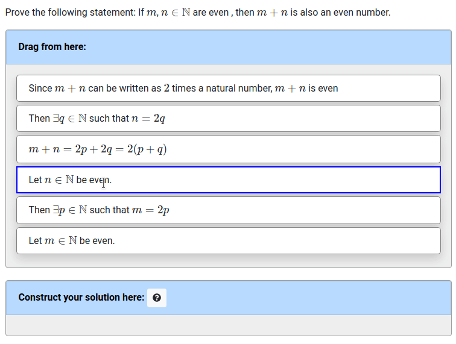

Seth Poulsen has
extended the pl-order-blocks
element by adding a grading method where the dependence between the
blocks is given by a directed acyclic graph (DAG), allowing many
different correct orderings. This allows the construction
of Proof Blocks questions,
where students construct mathematical proofs by dragging and
dropping blocks into a logically consistent order. Thanks go to
Mahesh Viswanathan
and Geoffrey Herman for
design input, and
Benjamin Cosman,
Patrick Lin,
and Yael Gertner for
beta-testing Proof Blocks with their students and providing very
helpful feedback.
Here is an example Proof Blocks question from an introductory proofs course:

The question.html that generates this question has:
<pl-order-blocks answers-name="proof1" source-blocks-order="random" grading-method="dag" solution-placement="bottom"> <pl-answer correct="true" tag="1" depends="" > Let $m \in \mathbb{N}$ be even. </pl-answer> <pl-answer correct="true" tag="2" depends="" > Let $n \in \mathbb{N}$ be even. </pl-answer> <pl-answer correct="true" tag="3" depends="1"> Then $\exists p \in \mathbb{N}$ such that $m = 2p$</pl-answer> <pl-answer correct="true" tag="4" depends="2"> Then $\exists q \in \mathbb{N}$ such that $n = 2q$</pl-answer> <pl-answer correct="true" tag="5" depends="3,4">$m + n = 2p + 2q = 2(p + q)$</pl-answer> <pl-answer correct="true" tag="6" depends="5"> Since $m + n$ can be written as $2$ times a natural number, $m + n$ is even</pl-answer> </pl-order-blocks>
Seth's paper Evaluating Proof Blocks Problems as Exam Questions was awarded an Honorable Mention for the best paper award at this years' International Computing Education Research Conference. In the paper, Seth showed that Proof Blocks problems give a substantial amount of information about student knowledge while being easier than written proof problems. See more research about Proof Blocks.
To try Proof Blocks, see the Proof Blocks demo question.
For more information, see the pl-order-block documentation.